Route A
Stay close
Best when kids are tired, tee times ran long, flights were delayed, or the group does not want another big transfer.
Resort Food Guide
For JW Marriott, Hyatt Hill Country, La Cantera, airport traffic, pool days, golf days, and late flights — find the food move that fits your zone before you commit to a long drive.
How to use this page
Jump to what you need
Start here
Most resort nights come down to three choices: stay close for nearby dinner, take a short rideshare upgrade, or make one restaurant the story of the night.
Route A
Best when kids are tired, tee times ran long, flights were delayed, or the group does not want another big transfer.
Route B
Best when the group wants a polished meal without turning dinner into a full downtown mission.
Route C
Best when the restaurant is the reason to go farther and the group has one open night to do it right.
Visitor needs
Tap the move that matches the night — easy resort meal, River Walk energy, seafood, rooftop drinks, breakfast, or late-night backup.
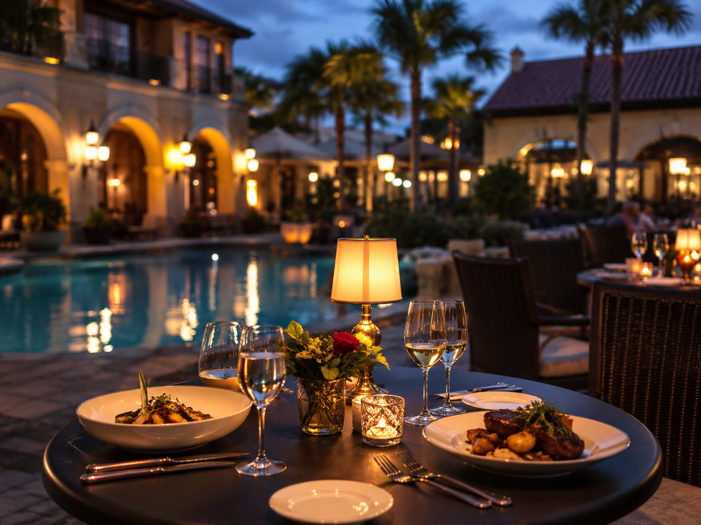
Resort guestZone-smart picks when distance and tired crews matter.
Open resort food guide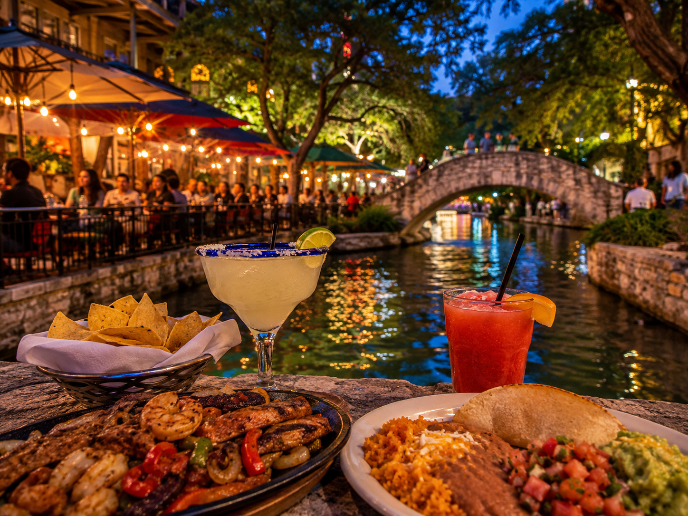
DowntownWalkable nights, drinks, and dinner handoffs that feel local.
Open River Walk picks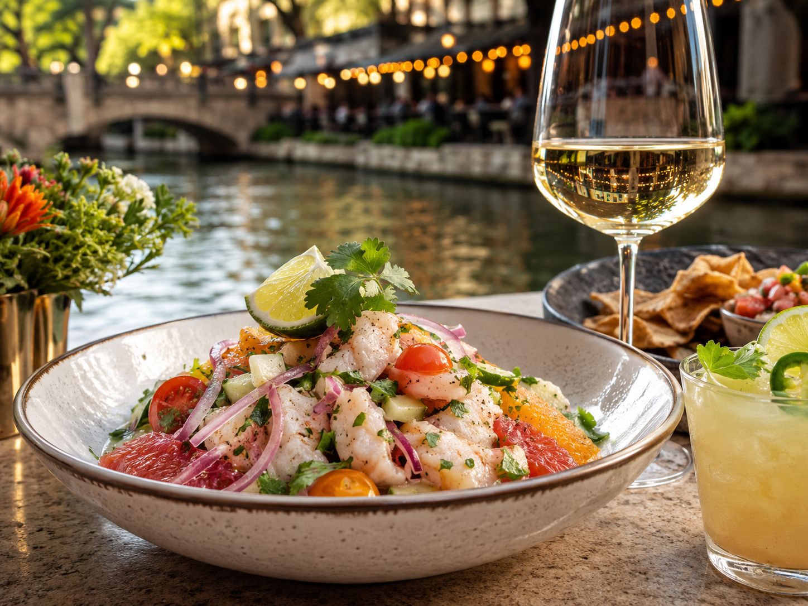
CoastalCitrus-forward seafood when the table wants flavor and spice.
Open seafood picks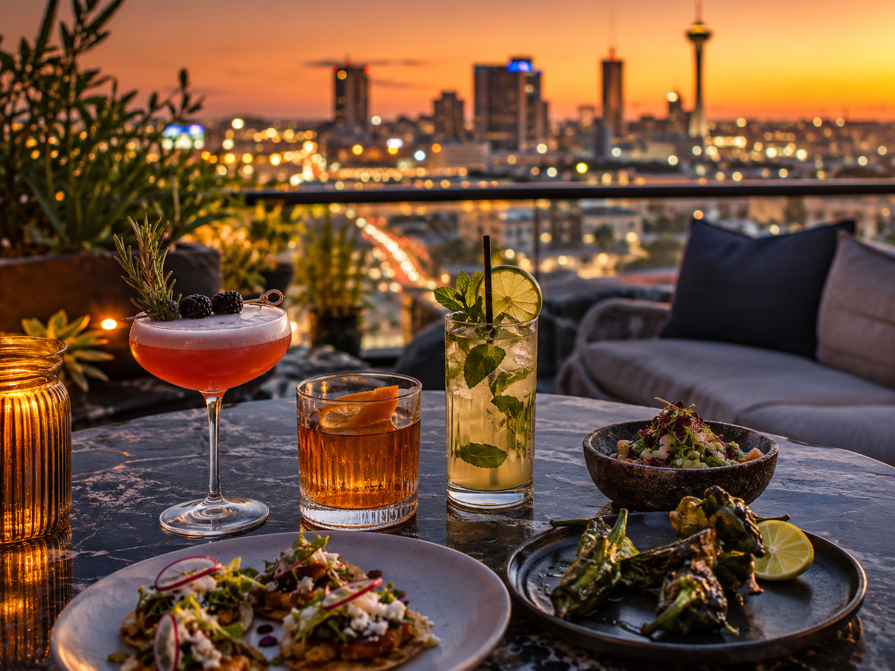
SkylineClassic cocktail rooms, modern lounges, and rooftop finishes.
Open drinks picks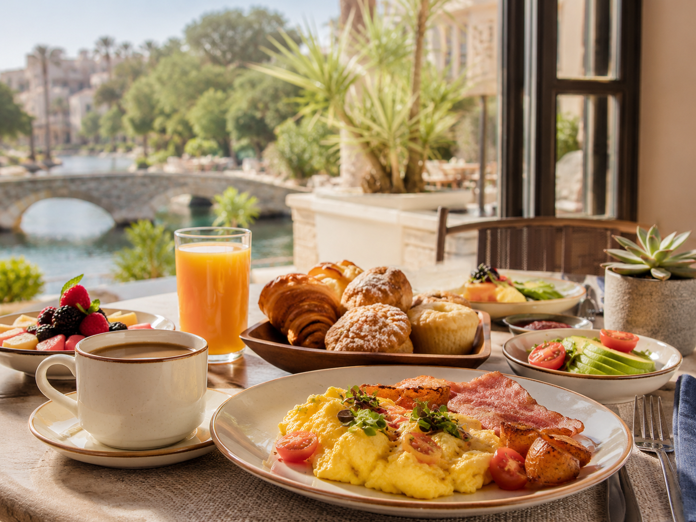
MorningBakery rhythm, hearty plates, and easy first moves.
Open breakfast picks After hours
After hours
Bar-hop energy, nightcaps, and safe pivots after dinner.
Open late-night picksResort guest desk
Match the hotel zone before chasing downtown. Each zone keeps tired families, business travelers, and pool days sane.
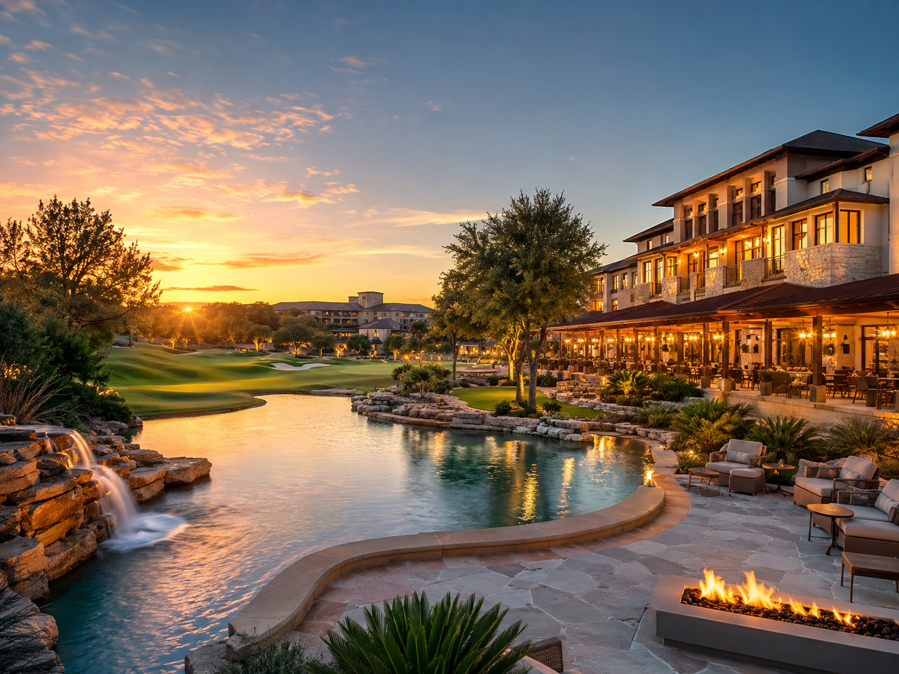
JW Marriott / TPC / North 281On-property comfort, polished nearby upgrades, and traffic-aware dinner choices.
Jump to JW / TPC zone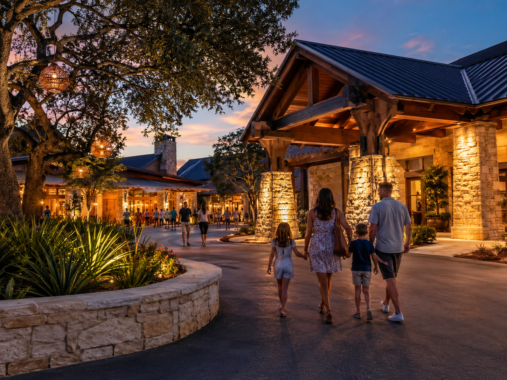
Hyatt Hill Country / SeaWorld sidePractical rings near SeaWorld, splash-day fatigue, and easier family dinner plans.
Jump to Hyatt zone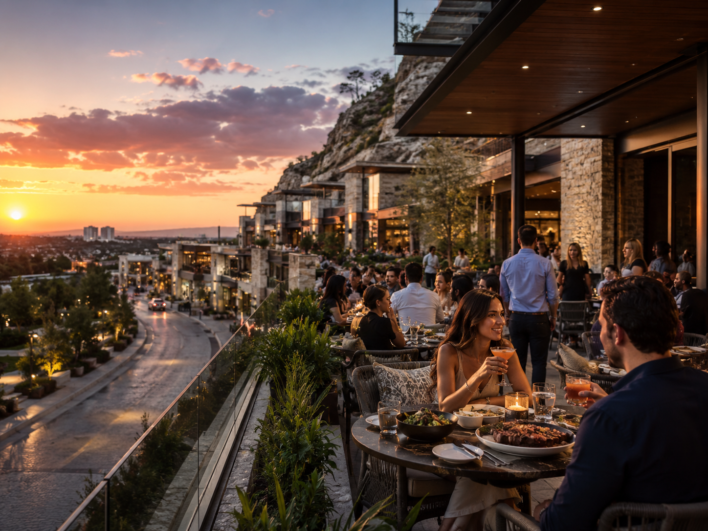
La Cantera / The RimSignia, The Shops, Six Flags, and Frost Plaza — food and activities without downtown traffic.
Jump to La Cantera zone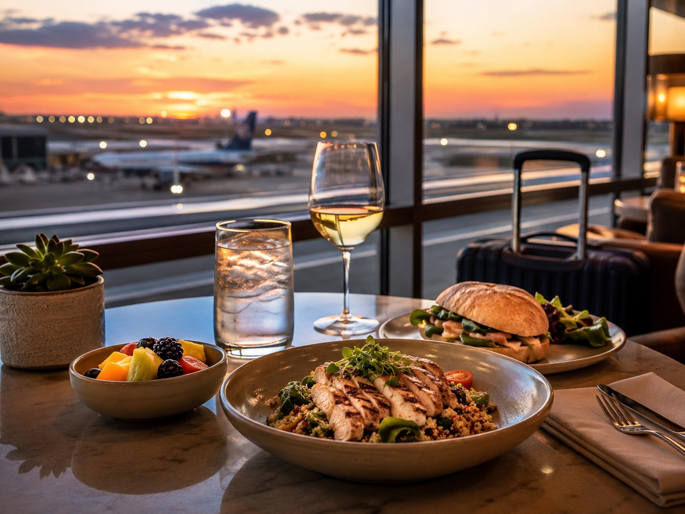
Airport timing / quick foodFast food timing, early flights, and simple meals before SAT runs.
Plan timing + route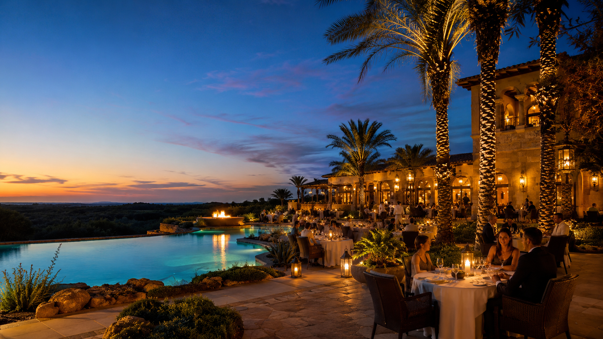
One big nightDowntown, Pearl, Soluna, seafood, steakhouse, or River Walk energy when dinner is the memory.
Jump to story dinnersJW Marriott / TPC / North 281
Golf, spa timing, and north-side traffic usually decide whether you stay on-property or stage a short rideshare upgrade.
Restaurants: 18 Oaks, Cibolo Moon, High Velocity, FIAMME.
Restaurants: J-Prime, Chama Gaúcha, Brasão if timing works.
Restaurants: La Panadería, Lupe Tortilla, nearby family-friendly options.
Hyatt Hill Country
SeaWorld, splash days, and early mornings usually beat a downtown run from this bubble.
Stay close when kids are done, weather turns, or the next morning starts early.
Use La Cantera / The Rim or nearby steakhouse areas when adults want a better dinner without a downtown run.
La Cantera / The Rim / northwest
La Cantera is one of San Antonio’s best resort zones when you want food, shopping, golf, entertainment, and Hill Country views without driving downtown. Use this area when you are staying at Signia by Hilton La Cantera, Eilan Hotel, shopping at The Shops at La Cantera, visiting Six Flags, or spending time around The Rock at La Cantera and Frost Plaza. This zone is separate from JW Marriott / TPC and from Hyatt Hill Country / SeaWorld — do not treat them as the same resort bubble.
Nine strong moves in the La Cantera / Rim / resort-property ring — scan the vibe, then book or walk in with a plan.
A luxury resort-ground dinner for anniversaries, wine, and a true splurge night without leaving the La Cantera property.
A big Texas-feeling dinner with polished energy, steaks, whiskey, brunch, and enough personality for out-of-town guests.
A newer culture-forward dinner option near the Spurs complex, with Italian comfort and South Texas smoke influence.
A polished Mexican dinner move with grilled meats, seafood, margaritas, tequila, and a festive group-friendly feel.
A trendy scratch-kitchen option for brunch, cocktails, comfort food, and casual dinners that still feel polished.
A classic white-tablecloth steakhouse move near La Cantera, useful for business dinners, celebrations, and steakhouse comfort.
A high-energy, easy group option with a huge menu and big beer list when the group cannot agree on one style of food.
A simple family-friendly pizza option near shopping and resort activity when you need something easy and familiar.
The easy in-resort dining option for breakfast, scenic comfort food, sunset drinks, and staying close when no one wants another drive.
La Cantera is not just a dinner zone. It works for shopping, theme parks, golf-adjacent resort time, family activities, date nights, and group entertainment.
A social golf-and-sports option that works even if not everyone plays golf.
Best for: large groups, casual date nights, families, late-night fun, sports fans.
Tip: Reserve a hitting bay online for busy weekend evenings.
High-energy indoor karting, games, VR, bowling, food, and drinks.
Best for: families with teenagers, competitive friend groups, rainy days.
Tip: Book race times online when possible to avoid long waits.
Polished open-air shopping and dining for strolling, retail, lunch, and low-pressure resort time.
Best for: shopping, walking, open-air dining, international visitors.
Tip: International travelers may want to check current Texas Tax Back options near the shopping area before leaving.
A Spurs-connected district with plaza events, gathering space, food, and a more modern San Antonio feel.
Best for: public events, family strolls, outdoor concerts, pre/post dinner add-ons.
Tip: Check the event calendar before you go.
A major theme park in a dramatic quarry setting near the resort zone — families, teens, and thrill seekers.
Best for: families, rollercoaster fans, full-day entertainment.
Tip: Start with high-demand rides earlier in the day when possible.
Stay in the La Cantera area when the group wants resort convenience, shopping, theme parks, golf energy, or a polished dinner without the downtown drive. Go downtown only when River Walk, Alamo, Market Square, rooftop, or a true San Antonio night is worth the extra ride.
Use this area when:
Not sure whether to stay near La Cantera or go downtown? Ask A Local with your hotel, group size, timing, and food mood.
Airport / quick food
When the flight matters more than the restaurant story, keep buffers honest and meals simple.
Keep buffers honest on 281 / 1604 nights before an early flight.
Choose a close first meal if the group is hungry, tired, or still figuring out the hotel plan.
Need airport timing or pickup details spelled out first? Get Route Help for SAT runs and resort handoffs.
Story dinners
Drive farther only when the restaurant is the memory.
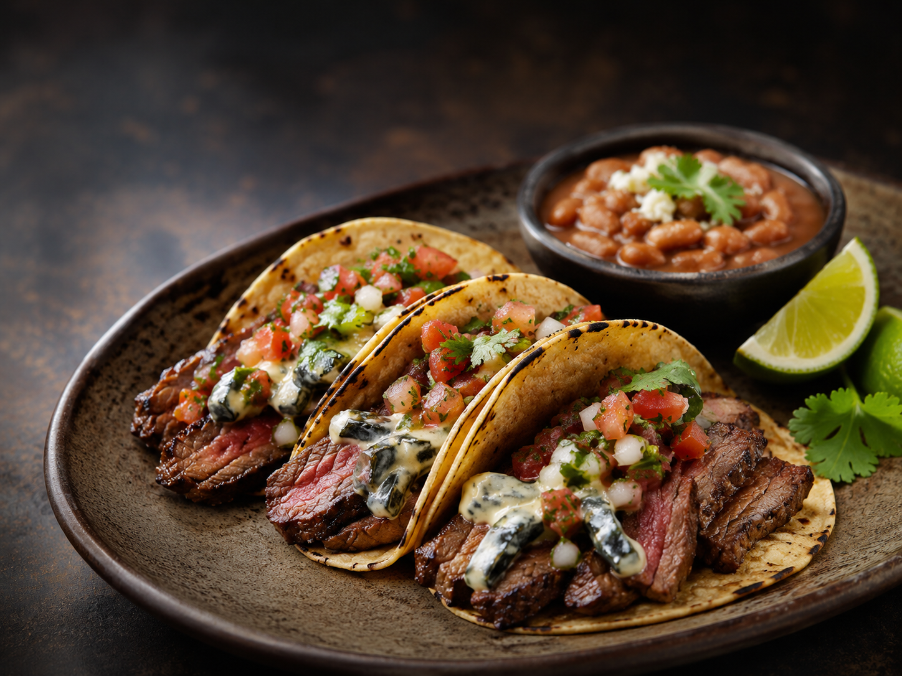
Soluna is worth punching into maps when ribeye tacos and chispas are the move.

Bohanan’s, Domingo, Ácenar, Paesanos, or Esquire when you want River Walk energy and a complete night.
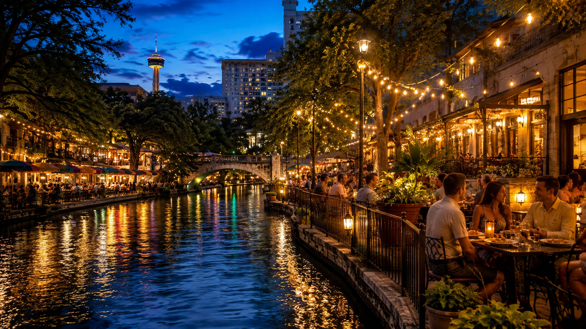
Supper, Brasserie Mon Chou Chou, Ladino, Amelia Social Lounge, or Sternewirth when the night needs district energy.
When the table wants a flavor-first seafood meal with serious ceviche energy.
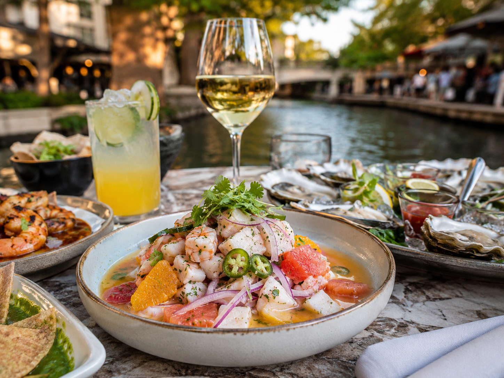
Another strong ceviche pick when the group wants citrus, spice, and a local crowd feel.
Group dinner picks
Three north-side picks with strong public ratings — use when hungry groups, clients, or celebration nights need a fast consensus.
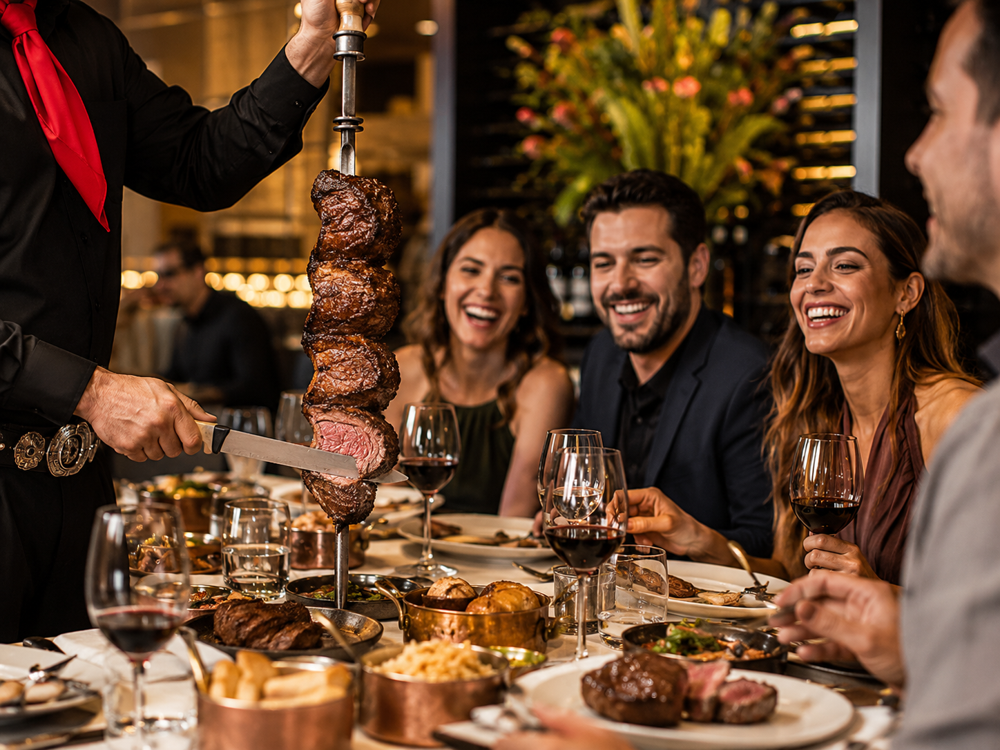
Best for: hungry groups, resort-area nights, business crews.
Strong personal confidence and a premium rodizio dinner. See Where To Eat for the full Brazilian comparison.
Brazilian picks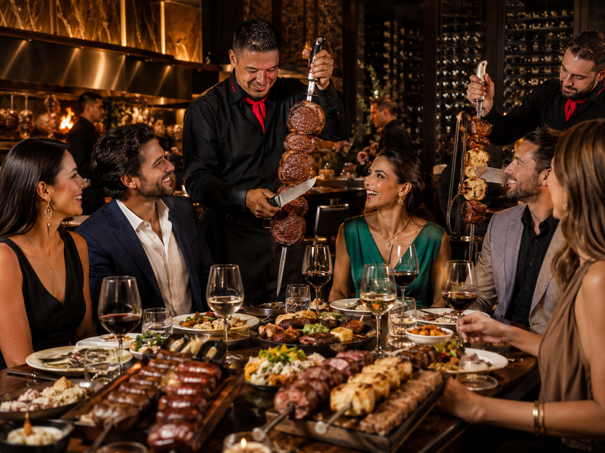
Best for: group dinners, steak-heavy nights, celebration tables.
A dependable crowd-pleaser when the whole table wants steak on a skewer. Book ahead for big crews.
Brazilian picks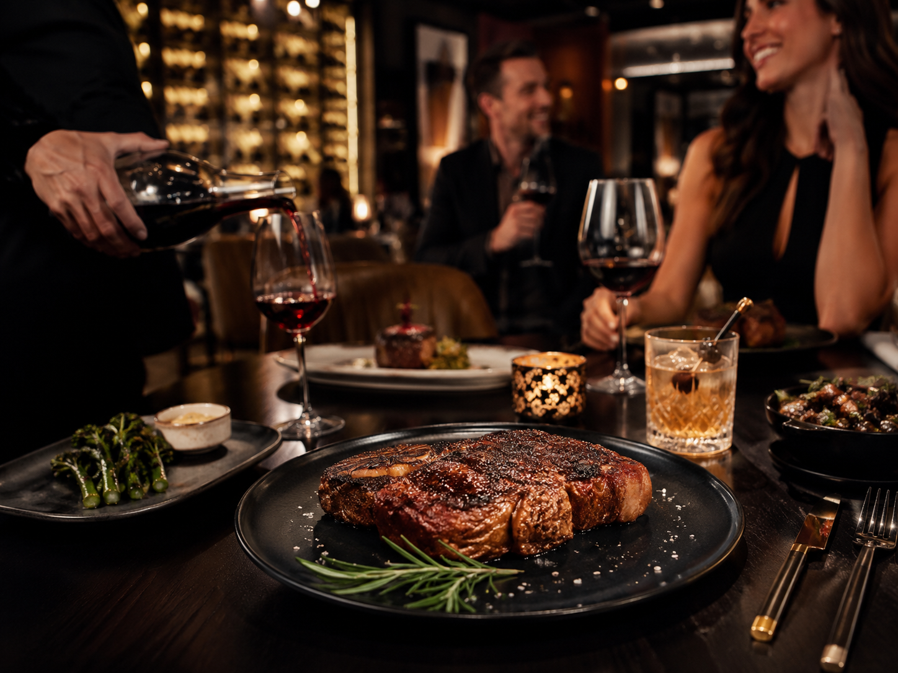
Best for: client meals, celebrations, upscale resort-area plans.
Polished steakhouse energy without downtown traffic when the night needs to feel special.
Steak picksTell us your resort, party size, timing, and dinner mood. We’ll help you pick the zone before traffic, kids, tee times, or airport timing make the decision for you.